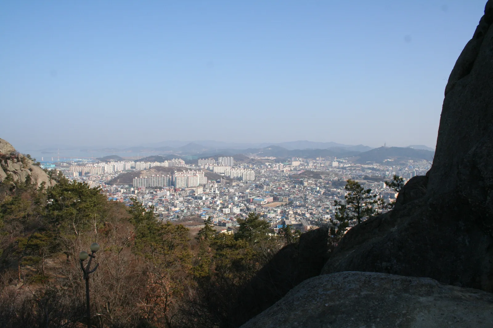
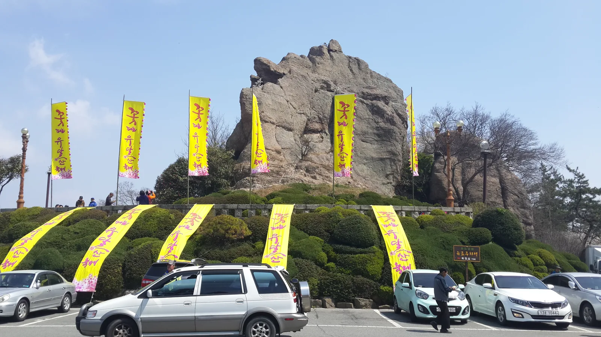
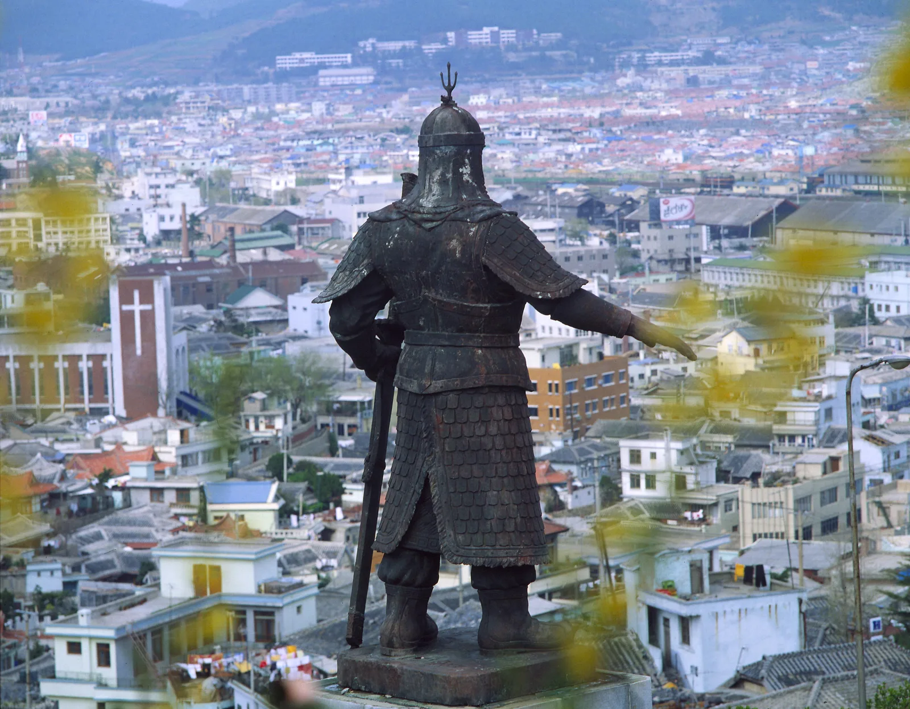
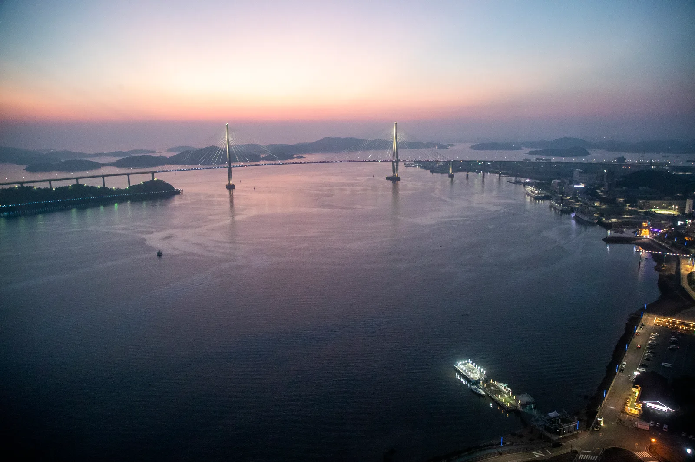
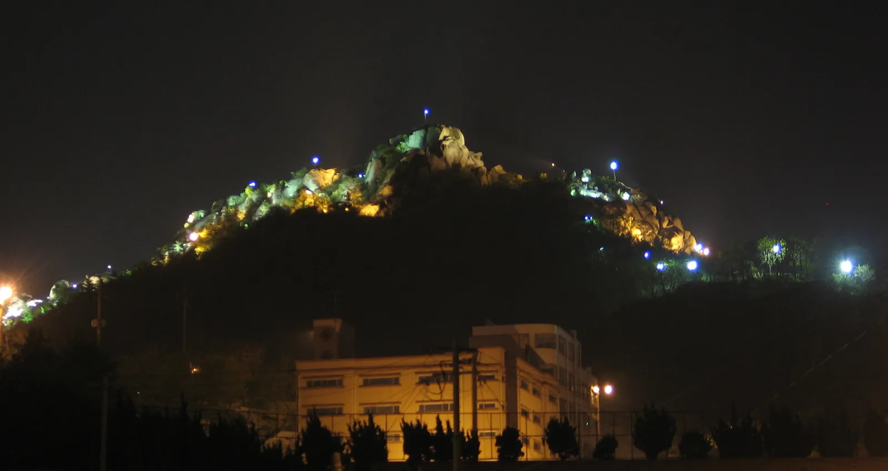
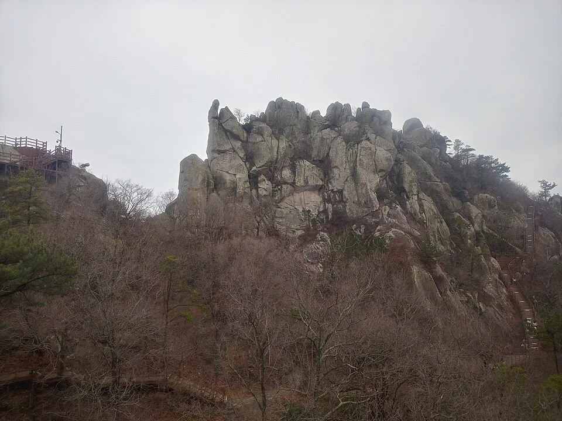
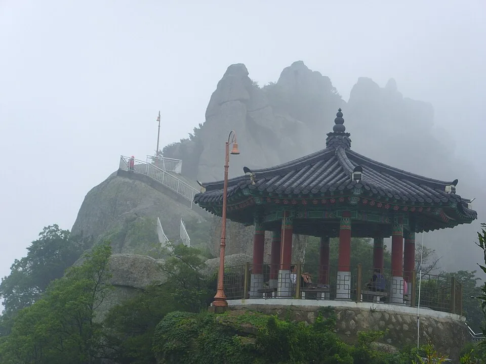

▲ 유달산의 상징인 기암괴석 봉우리. 정상부에는 전망대와 계단식 등산로가 이어진다
전남 목포시 한복판에 우뚝 솟은 유달산(儒達山)은 해발 228m에 불과하지만 '목포의 상징'이라 불릴 만큼 존재감이 크다. 목포 8경 중 으뜸으로 꼽히고, 기암괴석이 겹겹이 쌓인 능선은 어디서 봐도 한눈에 알아볼 수 있다. 정상 근처 노적봉에는 이순신 장군이 왜적을 속였다는 전설이 전해지고, 산자락에는 국내 최초 야외 조각공원이 조성돼 있다. 여기에 북항에서 고하도까지 바다를 가로지르는 목포해상케이블카까지 더하면 반나절 코스로 부족함이 없다. 이 기사는 노적봉 전설부터 조각공원, 케이블카, 야경 명소, 등산로·주차 정보까지 방문 순서대로 정리했다.
1. 유달산 개요 — 목포 8경의 으뜸
유달산은 목포시 죽교동 일대에 자리한 해발 228m의 바위산으로, 목포 시가지 어디서든 눈에 들어오는 지형적 상징이다. 정상부는 일등바위·이등바위·삼등바위 등 이름 붙은 봉우리들로 이어지는데, 그중 가장 높은 일등바위에는 영혼이 심판을 받는 곳이라는 전설이, 두 번째로 높은 이등바위에는 심판받은 영혼이 이동하는 곳이라는 전설이 전해진다. 바위산 특유의 험준한 능선과 소나무 숲이 어우러져 예로부터 '목포 8경' 중 으뜸으로 꼽혔고, 지금도 목포를 대표하는 관광지로 가장 먼저 언급된다.

▲ 유달산 능선에서 내려다본 목포 시가지. 산자락 바로 아래까지 도심이 맞닿아 있다 ⓒ Wikimedia Commons
2. 노적봉 — 왜적을 물리친 위장술의 무대

▲ 해발 60m의 바위산 노적봉. 일제강점기 도로 개설로 일등바위 능선에서 떨어져 나와 지금은 독립된 바위로 남아 있다 ⓒ Wikimedia Commons
유달산 초입에 자리한 노적봉(露積峰)은 해발 60m의 작은 바위산이지만, 유달산에서 가장 많이 회자되는 이야기를 품고 있다. 정유재란 때 명량대첩에서 12척의 배로 승리를 거둔 뒤 이순신 장군은 군사와 군량미가 턱없이 부족한 상태로 전열을 재정비해야 했다. 유달산 앞바다에 왜적의 배가 진을 치고 정세를 살피자, 장군은 노적봉 바위 전체를 볏짚(이엉)으로 덮어 마치 군량미를 산더미처럼 쌓아둔 것처럼 보이게 했다. 새벽녘에는 바닷물에 백토를 풀어 쌀뜨물처럼 보이도록 했는데, 이를 본 왜군은 조선군의 군세가 막강한 줄 알고 스스로 물러났다고 전해진다. 원래는 일등바위로 이어지는 능선의 일부였지만, 일제강점기 때 일본인 거주지와 구 시가지를 잇는 도로를 내는 과정에서 능선이 끊기며 지금처럼 섬처럼 홀로 남은 바위가 됐다.
목포시 문화관광에서 노적봉 상세 정보 확인 가능3. 조각공원과 낙조대 산책로

▲ 노적봉 인근 언덕에 세워진 이순신 장군 동상. 목포 시가지 전체를 내려다보는 자리에 서 있다 ⓒ Wikimedia Commons
노적봉을 지나면 유달산조각공원이 이어진다. 우리나라 최초의 야외 조각공원으로, '자연·문화·조각'을 주제로 심사를 거쳐 선정된 한국조각가협회 회원들의 작품 100여 점이 산책로를 따라 전시돼 있다. 산책로는 조각공원에서 시작해 다도해와 목포 앞바다가 한눈에 들어오는 낙조대(落照臺)를 지나, 소나무·참나무가 우거진 자연림과 유서 깊은 달성사(達聖寺) 전각으로 이어진다. 예술과 자연, 신앙이 한 산책로 안에서 겹겹이 이어지는 구성이 유달산 조각공원만의 특징으로 꼽힌다. 노적봉 위쪽 언덕에는 목포 시가지를 향해 팔을 뻗은 이순신 장군 동상도 서 있어, 조각공원 산책과 함께 들르기 좋다.
4. 목포해상케이블카 — 북항~유달산~고하도

▲ 케이블카 탑승 중 보이는 목포대교와 서해 노을. 북항에서 유달산을 거쳐 고하도까지 바다 위를 가로지른다 ⓒ Wikimedia Commons
유달산 정상까지 오르지 않고도 산 전체와 목포 앞바다를 조망하고 싶다면 목포해상케이블카가 대안이다. 북항스테이션에서 출발해 유달산 정상부에서 'ㄱ'자로 방향을 꺾은 뒤, 바다를 건너 반달섬 고하도까지 이어지는 국내 최장급 노선(총 3.23km)으로, 왕복 탑승 시간은 약 40분이다. 북항·유달산·고하도 세 개 스테이션마다 전망대와 먹거리, 편의시설이 마련돼 있어 케이블카 탑승 자체를 목적으로 방문하는 여행객도 많다.
| 구분 | 요금 |
|---|---|
| 일반캐빈 왕복(대인/소인) | 24,000원 / 18,000원 |
| 일반캐빈 편도(대인/소인) | 19,000원 / 13,000원 |
| 크리스탈캐빈 왕복(대인/소인) | 29,000원 / 23,000원 |
| 크리스탈캐빈 편도(대인/소인) | 22,000원 / 16,000원 |
| 운영시간 | 09:00~20:00(금·토 21:00까지), 매표는 종료 1시간 전 마감 |
| 노선 | 북항~유달산~고하도, 총 3.23km, 왕복 약 40분 |
단체(20인 이상)는 1,000원, 경로우대·국가유공자·장애인은 2,000원이 할인되며 목포시민은 대인 6,000원·소인 5,000원 할인 혜택이 있다. 36개월 미만 영유아는 무료다. 요금과 운영시간은 계절·기상 상황에 따라 바뀔 수 있어 방문 전 공식 홈페이지 확인이 필요하다.
목포해상케이블카 공식 홈페이지에서 최신 요금 확인 가능5. 야경 명소 — 유달산과 대반동

▲ 조명을 밝힌 유달산 정상부 야경. 해질녘부터 바위 능선을 따라 경관조명이 켜진다 ⓒ Wikimedia Commons
유달산은 낮보다 밤에 더 유명하다는 말이 있을 정도로 야경 명소로 손꼽힌다. 해가 지면 바위 능선을 따라 경관조명이 켜지고, 그 뒤로 목포대교의 화려한 조명이 함께 어우러진다. 유달산 자락에서 바다 쪽으로 내려오면 대반동 해안이 이어지는데, 카페와 횟집이 늘어선 해안도로에서 유달산과 목포대교, 바다 야경을 한 프레임에 담을 수 있어 목포 야경 명소로 자주 꼽힌다. 대반동 인근에는 두 사람이 갓을 쓰고 나란히 앉은 모습을 닮았다는 천연기념물 갓바위도 있는데, 야간 조명이 더해지면서 밤 산책 코스로도 인기가 높다.
6. 등산로·가는 법·주차

▲ 유달산 정상부 암봉 아래로 이어지는 목재 데크와 계단길. 초보자도 오를 수 있게 정비돼 있다 ⓒ Wikimedia Commons
유달산 등산로는 난이도에 따라 나뉜다. 1코스는 유달산입구에서 달성각·유선각·마당바위를 거쳐 정상인 일등바위까지 오르는 약 2km, 40분 구간이다. 2코스는 유달산입구에서 소요정을 지나 이등바위까지 이어지는 약 1km, 20분 구간으로 비교적 가볍게 오를 수 있다. 1932년 지어진 누각 유선각과 1959년 건립된 달성각은 각각 전망 포인트이자 중간 휴게소 역할을 하며, 소요정 역시 다도해를 조망할 수 있는 쉼터다. 계단과 산책로가 잘 정비돼 있어 초보자도 무리 없이 오를 수 있지만, 정상부 암봉 구간은 경사가 급한 편이라 편한 신발을 준비하는 것이 좋다. 입장료는 별도로 없다.

▲ 정상부 암봉을 배경으로 선 팔각 누각. 등산로 중간의 이런 누각들이 쉼터이자 전망 포인트 역할을 한다 ⓒ Wikimedia Commons
가을철에는 유달산 자락과 조각공원 산책로 주변으로 단풍이 번지면서 낙조대에서 보는 노을, 붉게 물든 능선이 함께 어우러진다. 단풍철에는 주말 방문객이 몰리는 만큼 이른 오전 방문을 추천한다. 유달산 입구와 조각공원 인근에 공영주차장이 마련돼 있고, 목포역·목포종합버스터미널에서도 시내버스로 접근할 수 있다.
✅ 목포 유달산, 가기 전 체크리스트
· 해발 228m, 목포 8경의 으뜸이자 목포의 상징
· 노적봉은 정유재란 당시 이순신 장군의 위장전술(볏짚으로 바위 덮기) 전설이 깃든 곳
· 유달산조각공원은 국내 최초 야외 조각공원, 낙조대·달성사로 이어지는 산책로 보유
· 목포해상케이블카(북항~유달산~고하도)는 총 3.23km, 왕복 약 40분, 일반 왕복 대인 24,000원
· 케이블카 운영시간 09:00~20:00(금·토 21:00까지), 매표 마감 종료 1시간 전
· 등산로 1코스(2km·40분, 정상행)와 2코스(1km·20분, 이등바위행), 입장료 없음
· 야경 명소는 유달산 경관조명·대반동 해안·갓바위, 목포대교와 함께 감상 가능
· 가을 단풍철은 낙조대 노을과 겹쳐 인기, 주말은 혼잡하니 이른 오전 방문 추천